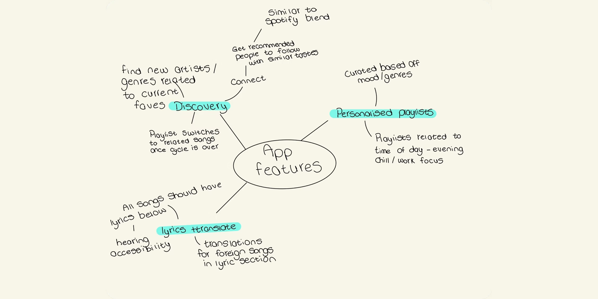
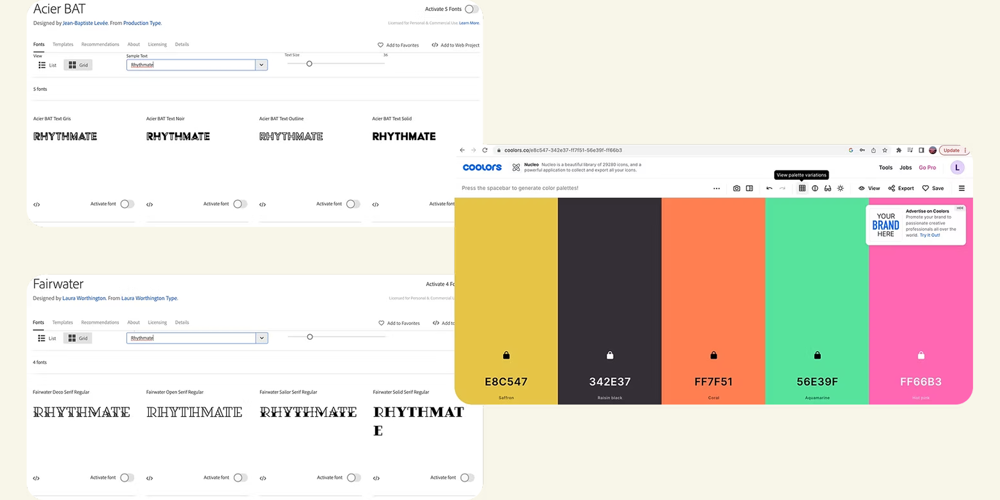
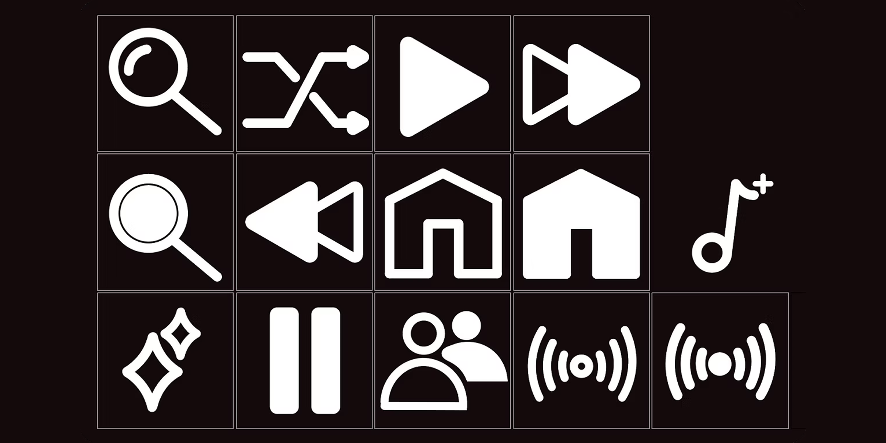
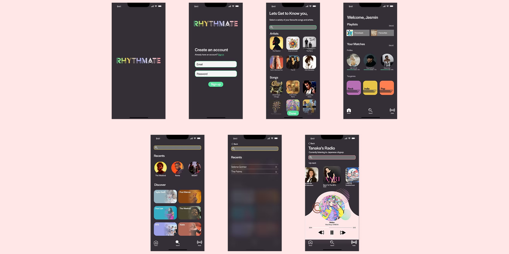

Rhythmate
Overview
As part of my imaging and data visualisation module during year one, I was given a 6 week period to design screens for a music app. Considering the short timeframe for the project, the outcome wasn't representative of a fully functioning app - the main focus was to come up with an idea for a music player that allowed you to discover, choose and play music. The final outcome involved presenting this as a minimum of 6 screens while demonstrating some level of branding for the music player.
Process
As with most projects, I began by carrying out some competitor analysis by looking at the interfaces of existing music players such as Spotify, Apple and YouTube music, doing so allowed me to start generating my own ideas. I began mind-mapping to decide on the specific features I wanted within my app, from which I decided I wanted it to be heavily centred around the discoverability of new music, features to achieve this would include AI generated song suggestions added to your playlists and a radio section allowing you to join in on live listening sessions with other members.

The next step was to look at stylistic choices for the visual aspect of the product, which included typefaces and colour pallet. By this point I had decided on a name for the app, Rhythmate, which is a direct representation of the purpose of the app (rhythm = music and mate = meeting likeminded people). Now that I had this I was able to input it into Adobe fonts to see a realistic application of contending typefaces.

I used the resource coolors.co to quickly generate a colour pallet with a range of complimenting colours, this was beneficial for allowing me to make the most efficient use of my time as it was limited for this project. The final task I carried out before beginning my high-fidelity mockups was creating an icon set that would allow me to appropriately demonstrate responsiveness within the navigation of the interface.

My final designs demonstrated the onboarding experience that would allow the app to immediately start generating recommendations for you, the following screens were standard screens featured in most music players - a home screen with playlists and genres and search function with artist recommendations. The final screen shows the radio feature which would allow the user to participate with live listening sessions hosted by other members.
